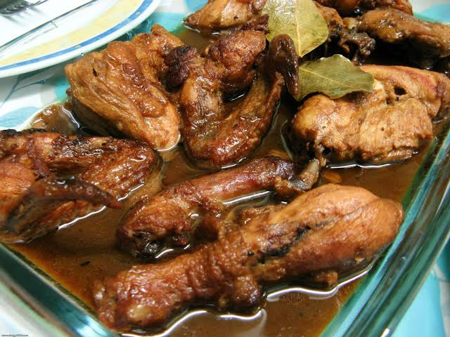
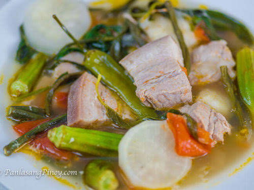
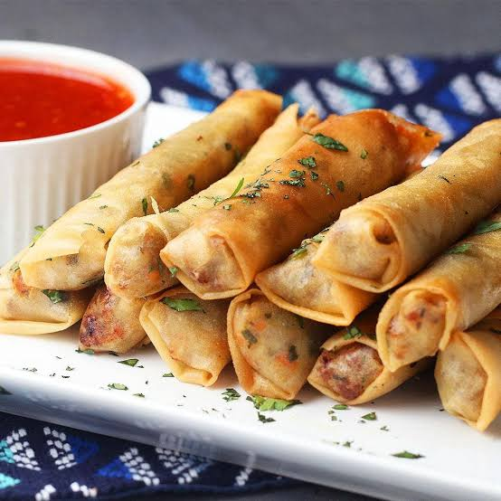
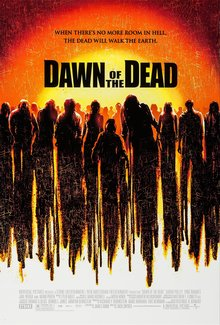

Cedmark B. Termulo
Cedmark B. Termulo
Third Year Students
Batchelor of Science Information Technology.
Buhaynasapa San Juan batangas.
Personal Information
- Age: 20 Years Old
- Sex: Male
- Height: 5.9
- Weight: 59
- Citizenship: Filipino
- Religion: IGLESIA
- Status: Single
Things that I Like
- Mobile Legends
- Playing Guitar
- Watching Anime
- Reading Books
Previous School
- Primary
- Buhaynasapa Elementary School
- Secondary
- Buhaynasapa National HighSchool
- Tertiary
- Batangas state University
| Family Member |
| Jessie S. Termulo |
Ma. Teresa B. Termulo |
Jessmark B. Termulo |
| Cedmark B. Termulo |
Leimark B. Termulo |
Trisha Mae B. Termulo |
page
Zodiac Sign
Capricorn

- The last earth sign of the zodiac, Capricorn is represented by the sea goat, a mythological creature with the body of a goat and tail of a fish.
Capricorns tap into their inner fortitude to overcome whatever stands between them and their long-term goals, and they don't let anything distract them from getting ahead.
Lucky color/number
- Blue
- 4,22,26
Hobbies
- Sports
- Drawing
- Reading
- Watching
Favorites
Foods
- Adobo

- Adobo refers to a method of marinating and stewing for any cut of meat or fish in a briny mixture of vinegar, soy sauce, and spices.
Filipino adobo should not be confused with the spicy Spanish adobo sauce. The meat is marinated and then stewed in this mixture, which yields a very flavorful, tangy, and tender meat.
- Sinigang

- Sinigang is a Filipino soup or stew characterized by its sour and savoury taste. It is most often associated with tamarind (Filipino: sampalok), although it can use other sour fruits and leaves as the souring agent. It is one of the more popular dishes in Filipino cuisine.
- Lumpia

- Lumpia consists of a thin rice or wheat flour wrapper filled with a mixture of meat (most often ground pork or ground beef), cabbage, carrots, onions, and garlic. An egg wash is used to seal the lumpia wrapper to ensure none of the filling escapes when it is deep fried.
.
Movies
- Men in black
- Agent M, a new member of the Men in Black, joins forces with Agent H to fight shape-shifting aliens. As they tackle the threat, they also deal with rumours of a traitor within their ranks.
page
- Fast & furious presents: hobbs & shaw
- US agent Luke Hobbs and British mercenary Deckard Shaw are forced to put their rivalry side and work together to stop a genetically enhanced supervillain.
- Dawn of the dead

- US agent Luke Hobbs and British mercenary Deckard Shaw are forced to put their rivalry side and work together to stop a genetically enhanced supervillain.